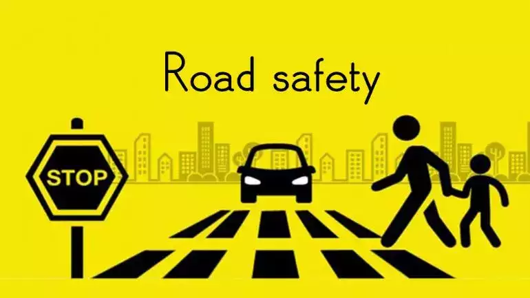

Road safety is important because it protects lives and promotes the well-being of individuals and communities. Every year, road accidents kill millions of people and cause serious injuries, making them one of the leading global public health concerns. In the Philippines, increasing vehicle use, traffic congestion, and unsafe driving behaviors further heighten the risk of accidents, especially for pedestrians and commuters. Ensuring road safety through responsible driving, proper infrastructure, and strict enforcement of traffic laws helps reduce these risks, saves lives, and creates safer, more secure communities for everyone.
